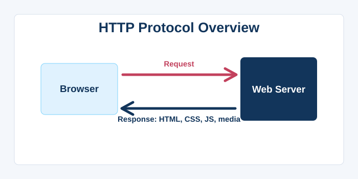
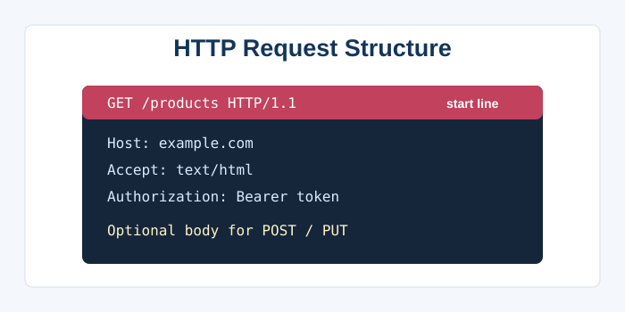
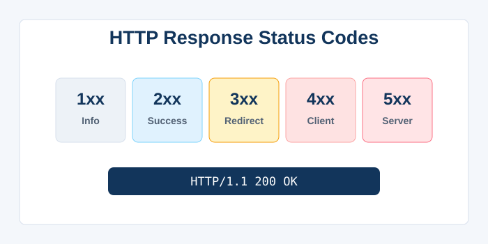
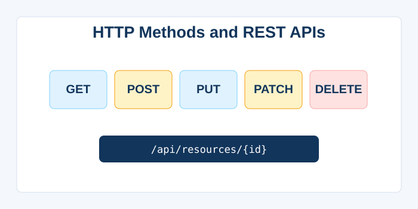
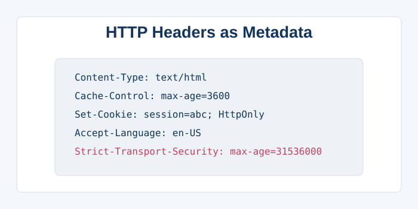
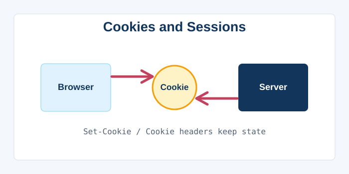
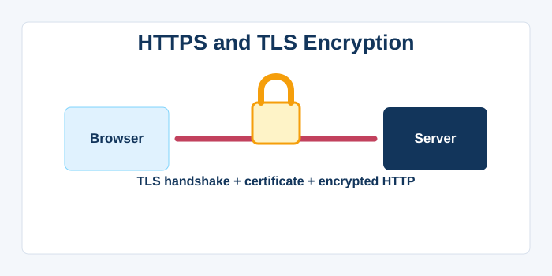
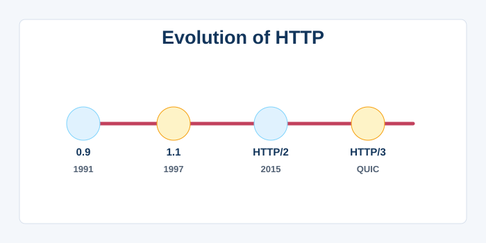

Hypertext Transfer Protocol (HTTP)
1. Introduction and Purpose
The Hypertext Transfer Protocol, universally known as HTTP, is the foundation of data communication on the World Wide Web. It is an application‑level protocol that defines the rules for how messages are formatted and transmitted between web clients (such as browsers) and web servers. Tim Berners‑Lee and his team designed HTTP in the early 1990s as a simple, text‑based request‑response protocol to retrieve hypertext documents. Its primary goal was to serve lightweight, stateless transactions, where each request from a client is independent and contains all the information the server needs to fulfil it. HTTP is a generic protocol, meaning it can be used for many tasks beyond delivering HTML, including transferring images, video, JSON data for APIs, and more. It runs on top of the reliable TCP/IP stack, typically on port 80, while its encrypted counterpart HTTPS uses port 443. The protocol has evolved through several versions—HTTP/0.9, HTTP/1.0, HTTP/1.1, HTTP/2, and most recently HTTP/3—each adding features to improve performance, efficiency, and security. Its stateless nature simplified server design but originally complicated session management, leading to the use of cookies, tokens, and other client‑side storage. Today, HTTP is the most widely used application protocol on the internet, carrying everything from simple web pages to complex, real‑time communications. Understanding HTTP is essential for web developers, network engineers, and anyone interested in how the modern internet functions, as it governs every click, form submission, and API call.

2. HTTP Request Structure
An HTTP request is a plain‑text message sent by the client, consisting of a start line, headers, an optional body, and a blank line separating the headers from the body. The start line contains three elements: the HTTP method (also called verb), the request target (usually a URL path), and the HTTP version. Common methods include GET (retrieve a resource), POST (submit data to be processed), PUT (replace a resource), DELETE (remove a resource), HEAD (retrieve headers only), and OPTIONS (discover supported methods). The request target may be an absolute path, a full URL, or an asterisk depending on context. Following the start line are HTTP headers, which are key‑value pairs providing metadata about the request: Host (the domain name, required since HTTP/1.1), User‑Agent, Accept (content types the client can handle), Content‑Type, and Authorization, among many others. The request body is present only in methods like POST or PUT and can contain form data, JSON, XML, or uploaded files, with its format described by the Content‑Type header. The request ends with a blank line, after which the server knows to start processing. Modern HTTP/2 and HTTP/3 encode requests in binary frames for efficiency, but the logical structure—method, headers, and body—remains consistent. Tools like cURL, Postman, and browser DevTools allow developers to inspect and construct requests manually, which is invaluable for debugging and API development.

3. HTTP Response Structure
When a server receives and processes a request, it replies with an HTTP response that follows a similar structure: a status line, headers, and an optional message body. The status line includes the protocol version, a three‑digit status code, and a human‑readable reason phrase (e.g., HTTP/1.1 200 OK). Status codes are grouped by the first digit: 1xx (Informational), 2xx (Success), 3xx (Redirection), 4xx (Client Error), and 5xx (Server Error). The 200 OK code indicates a successful request, while 201 Created signals a new resource was created. Redirection codes like 301 Moved Permanently and 302 Found instruct the client to look elsewhere. Client errors such as 400 Bad Request, 401 Unauthorized, 403 Forbidden, and 404 Not Found indicate issues with the client’s request. Server errors like 500 Internal Server Error and 503 Service Unavailable point to problems on the server side. Response headers provide information about the server (Server header), the content (Content‑Type, Content‑Length), caching directives (Cache‑Control, ETag), and cookies (Set‑Cookie). The message body contains the actual content—HTML, JSON, image binary—and is parsed according to the Content‑Type header. A well‑formed HTTP response allows the client to understand not only if the request succeeded but also how long the data can be cached, what permissions are attached, and how to handle the content securely. This standardised structure is crucial for building interoperable, maintainable web applications.

4. HTTP Methods and RESTful APIs
HTTP methods, also known as verbs, define the intended action to be performed on a resource, forming the basis of the Representational State Transfer (REST) architectural style. GET requests are safe and idempotent, meant only to retrieve data without any side effects. POST is used to create a new subordinate resource or submit data to a processing endpoint; it is neither safe nor idempotent, meaning repeated identical requests might create multiple records. PUT replaces an existing resource or creates one if it does not exist; it is idempotent, so multiple PUTs with the same data produce the same result. DELETE removes a resource and is also idempotent. PATCH is used for partial updates, sending only the changes rather than the entire resource. HEAD works like GET but returns only headers, useful for checking existence or caching freshness. OPTIONS returns the HTTP methods supported by a particular resource, enabling cross‑origin requests (CORS preflight). These methods, combined with resource‑oriented URLs, enable clean, predictable API design. Adhering to REST conventions—using nouns for resources, HTTP methods for actions, and proper status codes—makes web APIs intuitive and scalable. Hypermedia as the Engine of Application State (HATEOAS) extends REST further by including hyperlinks within responses to guide clients. The disciplined use of HTTP methods separates API design from the anarchy of custom commands, ensuring interoperability across tools and languages.

5. HTTP Headers and Content Negotiation
HTTP headers are the metadata of the web, carrying crucial information about the request, response, and the resource being transferred. Request headers like Accept, Accept‑Language, and Accept‑Encoding allow the client to specify what formats, languages, and compression algorithms it supports, a process called content negotiation. The server can then use this information to serve the most appropriate representation of the resource—for example, returning an HTML page in French with gzip compression. Response headers such as Content‑Type, Content‑Language, and Content‑Encoding tell the client what was actually served. Cache‑Control headers define caching policies (e.g., no‑cache, max‑age), while ETag and Last‑Modified enable conditional requests to avoid re‑downloading unchanged resources. The Host header is mandatory in HTTP/1.1, enabling virtual hosting where multiple domains share a single IP address. Authorization headers carry credentials for accessing protected resources, while Set‑Cookie headers establish session state. Security headers like Content‑Security‑Policy, Strict‑Transport‑Security, and X‑Content‑Type‑Options help mitigate attacks. Custom headers, usually prefixed with X‑, have been historically used for proprietary information, though the IETF now recommends against the X‑ prefix and advocates for registration. Proxies and intermediary servers can also add or modify headers, such as X‑Forwarded‑For to convey the original client IP. Mastering HTTP headers gives developers precise control over caching, security, internationalisation, and bandwidth optimisation, which directly affect application performance and user experience.

6. HTTP State Management: Cookies and Sessions
Because HTTP is inherently stateless—each request stands alone—the protocol itself provides no way to link multiple requests from the same user. To build interactive, stateful applications like shopping carts or logged‑in dashboards, the web relies on state management mechanisms layered on top of HTTP. The most common is the cookie: a small piece of data sent by the server via the Set‑Cookie response header and stored by the browser, then automatically included in subsequent Cookie request headers. Cookies have attributes that control their scope (Domain, Path), lifetime (Expires, Max‑Age), and security (Secure, HttpOnly, SameSite). Sessions work by assigning a unique session ID to a user, storing it in a cookie, and keeping the actual session data on the server side. Token‑based authentication, like JSON Web Tokens (JWT), stores state on the client and sends the token in the Authorization header, avoiding server‑side session storage. LocalStorage and SessionStorage provide client‑side storage with larger capacity, but they are not automatically sent with every request. State management has significant security implications: cookies without the HttpOnly flag can be read by JavaScript, opening the door to XSS attacks; without SameSite, they are vulnerable to CSRF. Modern browsers now default to Lax SameSite, reducing CSRF risks without developer intervention. The trade‑off between stateful sessions and stateless tokens is a fundamental architectural decision in web application design. Ultimately, these mechanisms enable the Web to support complex, personalised applications while maintaining the simplicity of the underlying HTTP protocol.

7. HTTPS and Transport Layer Security
HTTPS (HTTP Secure) is not a separate protocol but rather HTTP layered over the Transport Layer Security (TLS) protocol, formerly SSL. It provides encryption, data integrity, and authentication, ensuring that communication between client and server cannot be eavesdropped upon or tampered with by third parties. When a browser connects to an HTTPS site, a TLS handshake occurs first: the client and server agree on a cipher suite, exchange certificates, and generate session keys. The server’s certificate, issued by a trusted Certificate Authority (CA), proves its identity to the client; Extended Validation (EV) certificates add additional vetting but are less common today. Once the secure tunnel is established, HTTP messages flow through it, completely encrypted and protected by Message Authentication Codes (MACs). HTTPS uses port 443 by default, and HTTP/2 and HTTP/3 require encryption. The adoption of HTTPS has skyrocketed thanks to initiatives like Let’s Encrypt, which provides free, automated certificates, and browsers that mark HTTP sites as “Not Secure”. TLS also supports forward secrecy, ensuring that past sessions cannot be decrypted even if the server’s private key is later compromised. HTTP Strict Transport Security (HSTS) headers force browsers to always use HTTPS for a domain, preventing downgrade attacks. While HTTPS adds some computational overhead, modern hardware and optimised TLS 1.3 handshakes have made the performance impact negligible. In today’s internet, HTTPS is not optional; it is a mandatory baseline for any site handling personal data, logins, or even just public content, to protect user privacy and trust.

8. Evolution: HTTP/1.1, HTTP/2, and HTTP/3
HTTP has undergone significant revisions to keep pace with the web’s increasing complexity and performance demands. HTTP/1.1, standardised in 1997, introduced persistent connections (keep‑alive), chunked transfer encoding, and host‑based virtual hosting, which allowed multiple domains on a single IP. However, HTTP/1.1 still suffered from head‑of‑line blocking, where a single slow request could delay all subsequent requests on the same connection. HTTP/2, published in 2015, replaced the text‑based protocol with a binary framing layer, enabling multiplexing—many requests and responses to be interleaved on a single connection. It also introduced header compression with HPACK and server push, where the server could proactively send resources the client might need. HTTP/3, the latest iteration, is built on QUIC, a transport protocol that runs over UDP and eliminates TCP‑level head‑of‑line blocking entirely. QUIC integrates TLS 1.3, provides faster connection establishment (0‑RTT resumption), and improves performance on lossy networks like mobile. These updates have dramatically reduced latency and improved page load times, especially for rich web applications. Browser and server support for HTTP/3 is growing rapidly, and major CDNs and cloud providers already serve a significant portion of traffic over HTTP/3. The evolution of HTTP demonstrates the internet’s ability to incrementally upgrade its core protocols without disrupting global connectivity. The future will likely bring further refinements, such as better support for peer‑to‑peer communication and integration with WebTransport for low‑latency streams.
